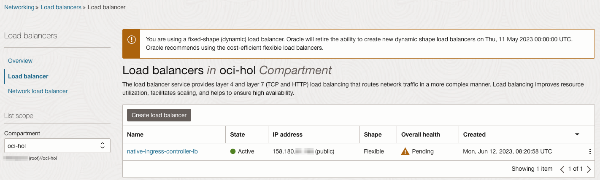

1.2.2.1.1 OCI Native Ingress Controller 설치하기
OKE에서는 여러가지 오픈 소스 ingress controller를 그대로 사용할 수 있습니다. 그와 함께 Ingress Controller를 OCI 서비스로 제공하고 있습니다.
- 참고 문서
- OCI Documentation > Container Engine > Setting Up the OCI Native Ingress Controller on a Kubernetes Cluster
- OCI Blog > Introducing Oracle Cloud Native Ingress controller for Kubernetes
- 설치 요구 사항
- 설치하기 전에 먼저 최신 기준 설치 요구사항을 문서 Prerequisites for deploying the OCI Native Ingress Controller에서 확인합니다.
- 2024년 1월 기준
- Flannel CNI를 사용하는 경우
- Kubernetes 1.25, 1.26, 1.27 지원
- OCI VCN-Native CNI를 사용하는 경우
- OCI VCN-Native CNI 성능 향상을 위해 OCI VCN-Native CNI 2.0을 사용하여 관련 요구사항으로 설치합니다.
- Kubernetes 1.26 이상
- OCI VCN-Native CNI 성능 향상을 위해 OCI VCN-Native CNI 2.0을 사용하여 관련 요구사항으로 설치합니다.
- Flannel CNI를 사용하는 경우
Step 1. OKE Cluster 생성
- 다음 설정으로 OKE Cluster를 생성합니다.
- Kubernetes 1.26.2
- OCI VCN-Native Pod Networking CNI
- Node Pool 이미지로 Oracle Linux 7 사용
Step 2. Load Balancer를 위한 Security Rules 추가
OCI VCN-Native Pod Networking CNI를 사용하기 때문에 이후 OCI Load Balancer에서 Pod로 분배를 위해서는 Load Balancer에서 Pod의 OCI Private IP로 통신을 위한 보안 규칙을 Security Rule에 추가해 주어야 합니다. 이 부분은 매뉴얼하게 추가하는 것이 필요합니다. 이후 테스트 앱 설정에서 추가하도록 하겠습니다.
Step 3. 권한 부여를 위한 Dynamic Group 만들기
OCI Native Ingress Controller가 필요한 OCI 자원을 관리할 수 있도록 권한을 부여합니다. User Principal 또는 Instance Principal을 사용할 수 있습니다. 편의상 여기서는 Instance Principal을 사용합니다.
-
OCI 콘솔에 로그인합니다.
-
좌측 상단 햄버거 메뉴에서 Identity & Security > Identity > Compartments로 이동합니다.
-
OKE 클러스터가 있는 Compartment의 OCID를 확인합니다.
-
좌측 Dynamic Group 메뉴로 이동하여 아래 규칙을 가진 Dynamic Group을 만듭니다.
- Name: 예, oke-native-ingress-controller-dyn-grp
instance.compartment.id = '<compartment-ocid>'
Step 4. OCI Native Ingress Controller에 권한 부여하기
-
OCI 콘솔에 로그인합니다.
-
좌측 상단 햄버거 메뉴에서 Identity & Security > Identity > Policies로 이동합니다.
-
아래 규칙을 가진 Policy를 만듭니다
- Name: 예, oke-native-ingress-controller-policy
- subject-name: 앞서 만든 dynamic group 이름, 예, oke-native-ingress-controller-dyn-grp
- location: 대상 OKE Cluster가 위치한 compartment 이름
Allow dynamic-group <subject-name> to manage load-balancers in compartment <compartment-name> Allow dynamic-group <subject-name> to use virtual-network-family in compartment <compartment-name> Allow dynamic-group <subject-name> to manage cabundles in compartment <compartment-name> Allow dynamic-group <subject-name> to manage cabundle-associations in compartment <compartment-name> Allow dynamic-group <subject-name> to manage leaf-certificates in compartment <compartment-name> Allow dynamic-group <subject-name> to read leaf-certificate-bundles in compartment <compartment-name> Allow dynamic-group <subject-name> to manage certificate-associations in compartment <compartment-name> Allow dynamic-group <subject-name> to read certificate-authorities in compartment <compartment-name> Allow dynamic-group <subject-name> to manage certificate-authority-associations in compartment <compartment-name> Allow dynamic-group <subject-name> to read certificate-authority-bundles in compartment <compartment-name> Allow dynamic-group <subject-name> to read cluster-family in compartment <compartment-name>
Step 5. cert-manager 설치하기
-
대상 OKE Cluster에 cert-managet를 설치합니다.
kubectl apply -f https://github.com/jetstack/cert-manager/releases/latest/download/cert-manager.yaml
Step 6. Helm CLI 설치하기
Helm CLI 설치 문서를 참고하여 사용할 수 있도록 클라이언트 환경에 설치합니다.
Step 7. OCI Native Ingress Controller 설치
-
OCI Native Ingress Controller 리포지토리를 가져옵니다.
git clone https://github.com/oracle/oci-native-ingress-controller -
oci-native-ingress-controller 폴더로 이동
-
vi helm/oci-native-ingress-controller/values.yaml 파일을 수정합니다.
-
compartment_id: OCI Load Balancer와 OCI Certificate이 생성될 Compartment ID를 지정합니다.
compartment_id: "ocid1.compartment.oc1..aaaaaaaa______ddq" -
subnet_id: 생성될 OCI Load Balancer가 위치할 Subnet의 ID를 지정합니다.
subnet_id: "ocid1.subnet.oc1.iad.aaaaaaaa______dba" -
cluster_id: 설치될 OKE Cluster의 ID를 지정합니다.
cluster_id: "ocid1.cluster.oc1.iad.aaaaaaaa______dba" -
authType: Instance Principal을 뜻하는 기본 instance 값을 그대로 사용합니다.
authType: instance -
Ingress Controller의 Pod의 가용성을 늘리고 싶은 경우 replica를 늘립니다.
replicaCount: 3 -
수정후 저장합니다.
-
-
Helm CLI를 통해 설치합니다.
helm install oci-native-ingress-controller helm/oci-native-ingress-controller -
설치 결과를 확인합니다.
kubectl get pods -n native-ingress-controller-system -o wide-
예시
$ kubectl get pods -n native-ingress-controller-system -o wide NAME READY STATUS RESTARTS AGE IP NODE NOMINATED NODE READINESS GATES oci-native-ingress-controller-7666f768b6-452t6 1/1 Running 0 2m9s 10.0.40.26 10.0.10.213 <none> <none> oci-native-ingress-controller-7666f768b6-722wk 1/1 Running 0 2m9s 10.0.40.57 10.0.10.93 <none> <none> oci-native-ingress-controller-7666f768b6-ttr2c 1/1 Running 0 2m9s 10.0.40.81 10.0.10.156 <none> <none>
-
OCI Native Ingress 자원 만들기
OCI Native Ingress Controller를 사용하기 위해서는 몇가지 쿠버네티스 자원을 만들어야 합니다.
- IngressClassParameters: OCI Native Ingress Controller를 통해 OCI Load Balancer를 만들기 위한 기본 정보를 입력합니다.
- IngressClass: 실제 OCI Load Balancer를 만드는데 사용됩니다. IngressClassParameters에 정의된 정보를 기반으로 OCI Load Balancer를 생성합니다.
- Ingress: OCI Load Balancer로 들어오는 외부 요청을 Pod Backend로 분배할 규칙을 정의합니다.
이전에 테스트한 Nginx Ingress Controller와 동일한 순서로 진행하기 위해서, 여기서는 IngressClass까지만 만들겠습니다.
Step 8. IngressClassParameters 만들기
-
설정 가능 항목은 아래와 같습니다.
- compartmentId: OCI Load Balancer가 위치할 Compartment가 Controller 설치시 지정한 것과 다른 경우 입력
- subnetId: OCI Load Balancer가 위치할 서브넷이 Controller 설치시 지정한 것과 다른 경우 입력
- loadBalancerName: 생성할 OCI Load Balancer 이름
- isPrivate: 사용한 서브넷이 Private Subnet인지 아닌지
- maxBandwidthMbps: 생성할 OCI Load Balancer Shape
- minBandwidthMbps: 생성할 OCI Load Balancer Shape
apiVersion: "ingress.oraclecloud.com/v1beta1" kind: IngressClassParameters metadata: name: <icp-name> namespace: <ns-name> spec: compartmentId: "<compartment-ocid>" subnetId: "<subnet-ocid>" loadBalancerName: "<lb-name>" isPrivate: false maxBandwidthMbps: <max-bw> minBandwidthMbps: <min-bw> -
아래와 배포 파일을 작성합니다.
- 파일명: 예, native-ic-ingress-params.yaml
- OCI Native Ingress Controller 설치시 지정한 서브넷을 그대로 사용하는 경우, 아래와 같이 최소 필요한 정보로 배포합니다.
- OCI Load Balancer의 서브넷을 Helm 배포시 정할시, IngressClassParameters에 입력할지는 관리할 편한 쪽으로 할 필요가 있습니다.
apiVersion: ingress.oraclecloud.com/v1beta1 kind: IngressClassParameters metadata: name: native-ic-ingress-params namespace: native-ingress-controller-system spec: loadBalancerName: "native-ingress-controller-lb" isPrivate: false minBandwidthMbps: 100 maxBandwidthMbps: 400 -
대상 클러스터에 배포합니다.
kubectl apply -f native-ic-ingress-params.yaml
Step 9. IngressClass 만들기
-
설정 가능 항목은 아래와 같습니다.
apiVersion: networking.k8s.io/v1 kind: IngressClass metadata: name: <ic-name> annotations: ingressclass.kubernetes.io/is-default-class: "<true|false>" spec: controller: oci.oraclecloud.com/native-ingress-controller parameters: scope: Namespace namespace: <ns-name> apiGroup: ingress.oraclecloud.com kind: ingressclassparameters name: <icp-name> -
아래와 배포 파일을 작성합니다.
- 파일명: 예, native-ic-ingress-class.yaml
- OCI Native Ingress Controller 사용하고, IngressClassParameters를 앞서 만든 자원으로 지정해 줍니다.
apiVersion: networking.k8s.io/v1 kind: IngressClass metadata: name: native-ic-ingress-class annotations: ingressclass.kubernetes.io/is-default-class: "true" spec: controller: oci.oraclecloud.com/native-ingress-controller parameters: scope: Namespace namespace: native-ingress-controller-system apiGroup: ingress.oraclecloud.com kind: ingressclassparameters name: native-ic-ingress-params -
대상 클러스터에 배포합니다.
kubectl apply -f native-ic-ingress-class.yaml -
배포 결과를 확인합니다.
- 생성된 IngressClass를 조회하면, Annotation에서 생성된 OCI Load Balancer의 ID를 확인할 수 있습니다.
$ kubectl describe IngressClass native-ic-ingress-class Name: native-ic-ingress-class Labels: <none> Annotations: ingressclass.kubernetes.io/is-default-class: true oci-native-ingress.oraclecloud.com/id: ocid1.loadbalancer.oc1.ap-chuncheon-1.aaaaaaaa_______________________________________________gbfpa Controller: oci.oraclecloud.com/native-ingress-controller Parameters: APIGroup: ingress.oraclecloud.com Kind: ingressclassparameters Name: native-ic-ingress-params Events: <none>
Load Balancer IP 확인
-
OCI 콘솔에 로그인합니다.
-
좌측 상단 햄버거 메뉴에서 Networking > Load Balancers > Load Balancer로 이동합니다.
-
IngressClassParameters에서 지정한 이름으로 Load Balancer가 생성된 것을 확인할 수 있습니다.
- 아직 라우팅할 Backend가 설정되어 있지 않기 때문에 Pending 상태입니다.
- 여기서 Load Balancer IP를 확인할 수 있습니다. 쿠버네티스에서 이후 Ingress 규칙을 생성하게 되면, kubectl 명령으로 확인할 수 있습니다.

이 글은 개인으로서, 개인의 시간을 할애하여 작성된 글입니다. 글의 내용에 오류가 있을 수 있으며, 글 속의 의견은 개인적인 의견입니다.